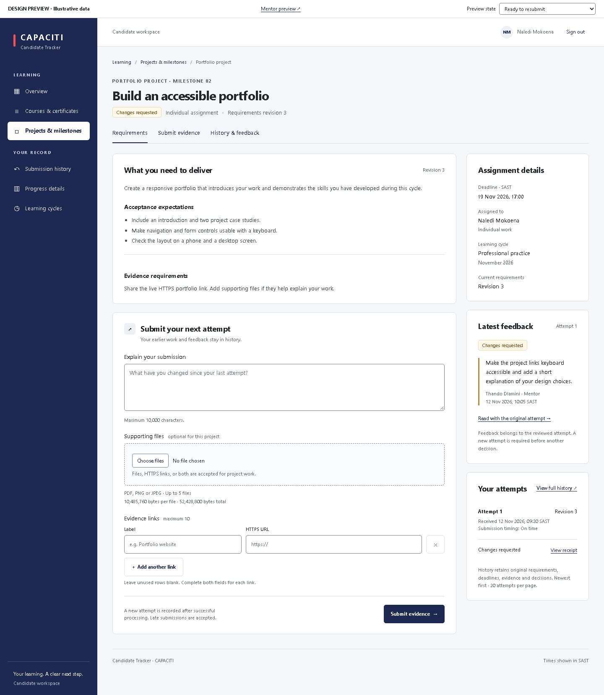
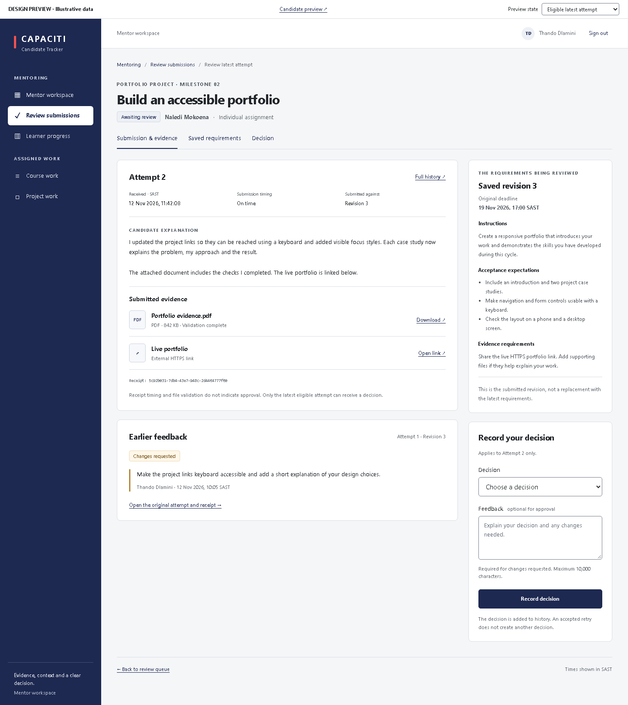

Understand. Improve. Submit.
Requirements in the main flow, deadline and feedback in context, a focused evidence form.
Open responsive preview →
One coherent workspace. Requirements, evidence and feedback stay together; role navigation stays clear.
Read the full design framework →
Requirements in the main flow, deadline and feedback in context, a focused evidence form.
Open responsive preview →
Submitted attempt alongside its original requirements, with one clear decision action.
Open responsive preview →
Hierarchy and content order; sidebar grouping; evidence entry; saved revision/deadline visibility; mobile flow. Use the preview-state selector for validation, processing, approval, stale forms, eligibility and denial examples. Mobile menu supports Tab and Escape.
No implementation begins until this design is approved. Passing preview checks does not replace authenticated functional or accessibility acceptance.